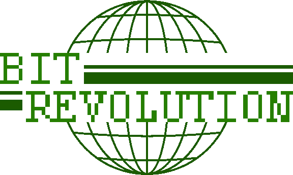
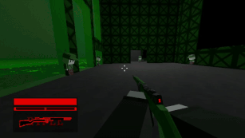

Download Link
Bit Revolution is a game that I spent around a year working on in 2024. It started in February and was pushed to Itch on June 14 2024.
The main inspiration behind it was Hakita 'Arsi' Patala's ULTRAKILL, a game that was very addicting to me at the time.
Essentially, you're a robot with a gun who wants to take down a city. Very similar to the plot of ULTRAKILL, but cut me some slack, alright?
This game being my longest worked on meant that it had the biggest effect on me. To this day, I still re-use sounds and scripts made for Bit Revolution.
I hope you're able to enjoy this game as much as I did making it and sharing it with my friends. :)